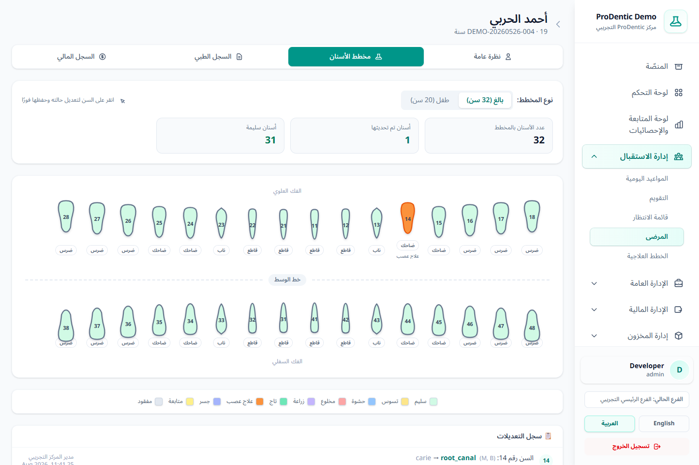
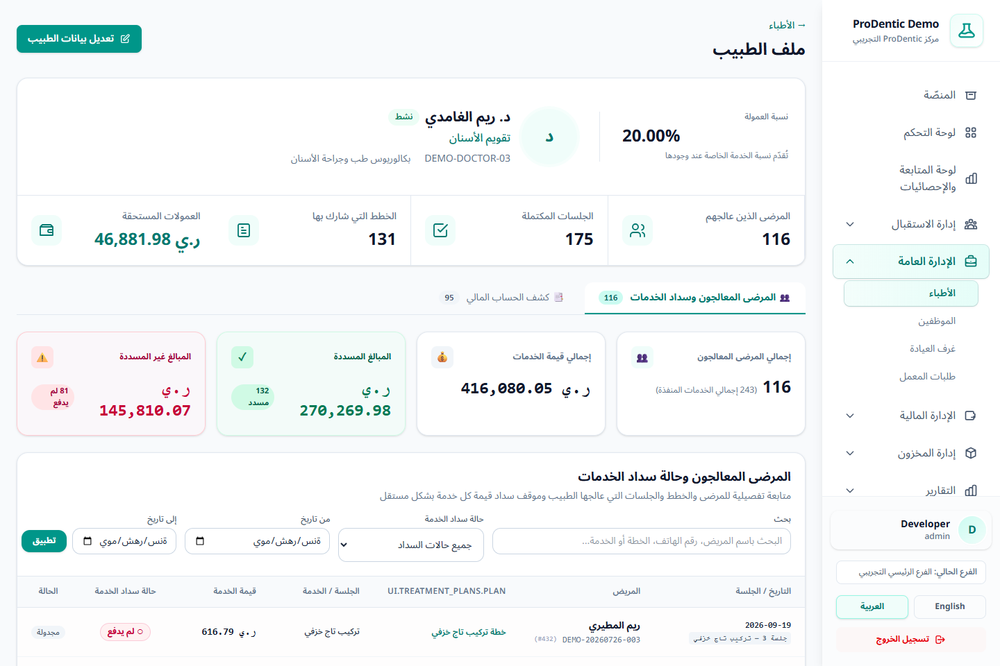

1القائمة الجديدة ولوحة التحكم
أصبحت القائمة الجانبية مجمعة حسب طبيعة العمل لتقليل التشتت:
إدارة الاستقبال
المواعيد، التقويم، قائمة الانتظار، المرضى والخطط العلاجية.
الإدارة العامة
الأطباء والموظفون والغرف وطلبات المعمل.
الإدارة المالية
الفواتير والأقساط والمصروفات والإغلاق والحسابات والرواتب.
إدارة المخزون
المنتجات وطلبات الصرف والتوريد والموردون والحركات والمرجعيات.
التقارير والإعدادات
تقارير الدخل والتحصيل والمصروف، ثم الفروع والخدمات والأسعار والسياسات.
الإدارة
المستخدمون والأدوار والصلاحيات وإعدادات النظام والنسخ وسجل المراجعة.
أضيف إلى لوحة التحكم تنبيه طلبات معامل متأخرة بجانب المرضى والمواعيد ونقص المخزون.
 لوحة التحكم اليومية مع التنبيهات وجدول المواعيد والإجراءات السريعة.
لوحة التحكم اليومية مع التنبيهات وجدول المواعيد والإجراءات السريعة.
2مخطط الأسنان: حالات متعددة وعلاج العصب
- افتح ملف المريض ثم تبويب مخطط الأسنان.
- اختر مخطط بالغ (32 سنًا) أو طفل (20 سنًا).
- اضغط السن، ثم حدد حالة واحدة أو عدة حالات. اختيار «سليم» يلغي الحالات المرضية الأخرى لذلك السن.
- حدد الأسطح المتأثرة، وأدخل الملاحظات السريرية.
- لعلاج العصب أضف القنوات، ثم اكتب اسم القناة وطولها ومقاسها وملاحظتها. الحد الأقصى 10 قنوات للسن.
- اضغط حفظ؛ يتحدث لون السن ويُسجل التغيير في سجل المخطط.
 نافذة السن تدعم اختيار عدة حالات، وتحديد الأسطح، وإضافة قنوات علاج العصب وبياناتها.
نافذة السن تدعم اختيار عدة حالات، وتحديد الأسطح، وإضافة قنوات علاج العصب وبياناتها.

المخطط يدعم الترقيم FDI للبالغ والطفل ويعرض عدد الأسنان المعالجة ومؤشر قنوات العصب.
صلاحية الوصول هي patients.dental_chart. حالات الأسنان وأسـطحها النشطة تُدار من الإعدادات.
3ملف الطبيب وحالة سداد الخدمات
صفحة الطبيب لم تعد مجرد بيانات تعريفية؛ أصبحت ملفًا تشغيليًا وماليًا يتضمن:
- عدد المرضى الذين عالجهم الطبيب والنشاط العلاجي.
- قائمة المرضى المعالجين والخدمات المرتبطة بهم.
- حالة سداد كل خدمة أو بند لمعرفة ما يغطيه التحصيل.
- كشف الحساب المالي والعمولات المستحقة والمدفوعة وفق صلاحيات المستخدم.
- نسبة العمولة الأساسية، مع أولوية نسبة الخدمة الخاصة عند تعريفها.

ملف الطبيب يجمع المرضى وحالات السداد وكشف الحساب والنشاط العلاجي في صفحة واحدة.